Install the SDK
Download the SDK
-
Sign in to the Knox Partner Portal. If you’re not already a member of the Knox Partner Program, click Become a Partner and provide your details.
-
Select Knox Developers.
-
On the Knox Developers dashboard, click SDK Tools > SDK Downloads.
-
On the SDK Downloads page, click Download for the SDK you want.
-
Review the SDK Agreement. If you agree to the terms, select the checkbox and click Accept. The browser saves the SDK package into your Downloads folder.
-
Copy the extracted
addon_xxxfolder to the add-ons folder of your integrated development environment (IDE).- For Tizen Studio — tizen-studio\ide\plugins
Set Up Tizen Studio
-
Install a suitable Tizen Studio version for your PC environment: Windows, Ubuntu, or MacOS.
-
Install the necessary add-on packages to develop or debug your own app. Go to Tools > Package Manager > Install 4.0 wearable items in the Main SDK tab, and install the Samsung Certificate Extension and Samsung Wearable Extension SDKs.
- On the Install Samsung Knox Tizen SDK for Wearables section below, find the NOTES that clearly explain this process.
-
To issue the certificates, sign up for a Samsung account.
-
Turn on “debug mode” on the Watch to connect up with your note PC.
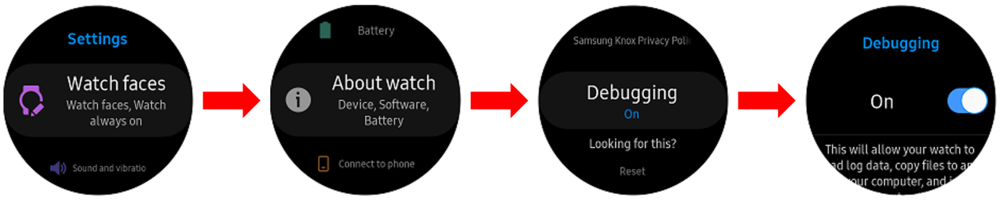
-
If you don’t have a cradle to connect with your PC, please refer to the guide for wireless connection.
For information on app signing, read Sign an app.
Install the SDK
-
Launch the Tizen Studio Package Manager. (Note: You can also open it from Tizen Studio by clicking Tools > Package Manager.)
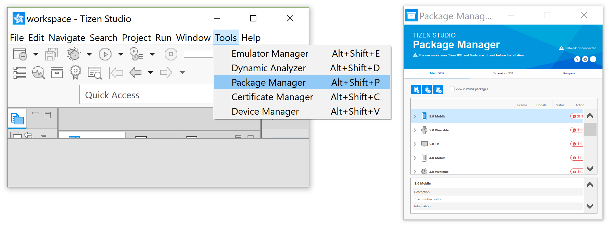
-
On the row of icons at the top right of the window, click on Configuration or the gear icon.

-
In the Configuration window, find the Extension SDK section below Main SDK and expand its settings by clicking the down arrow.
Be sure that the activation is turned on for both Samsung Certificate Extension and Samsung Wearable Extension SDKs.
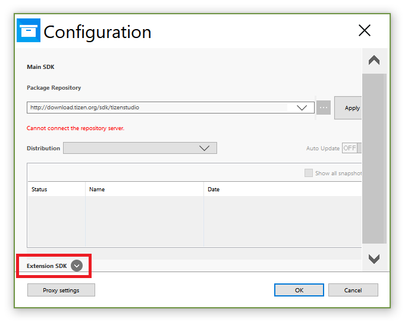
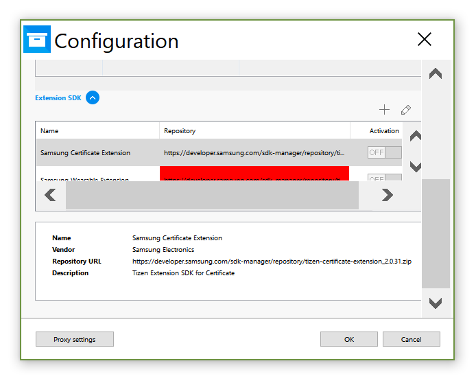
-
Click the + button to add a repository.
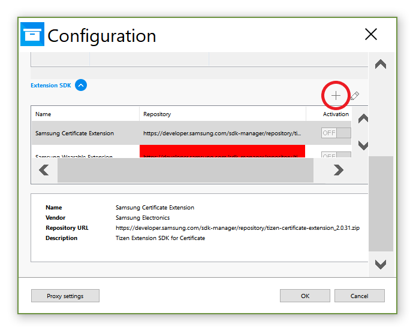
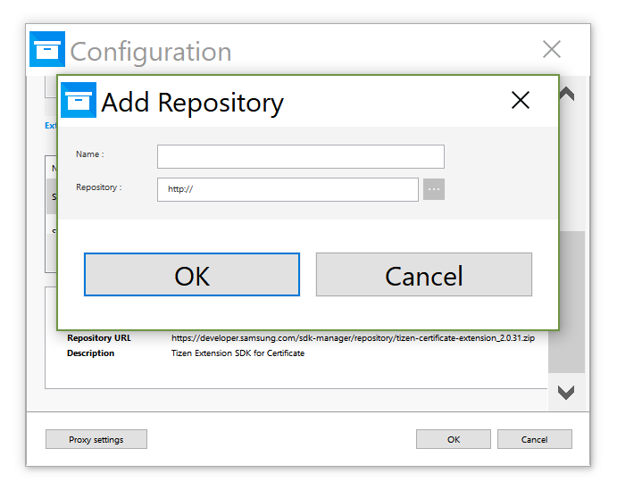
-
In the Add Repository window, enter the Name (For example,
KnoxSDKWearable). For your Repository, navigate to where your Samsung Knox Tizen SDK for Wearables zip file is (knox_add_on_sdk_2.3.1.zip) and click on it.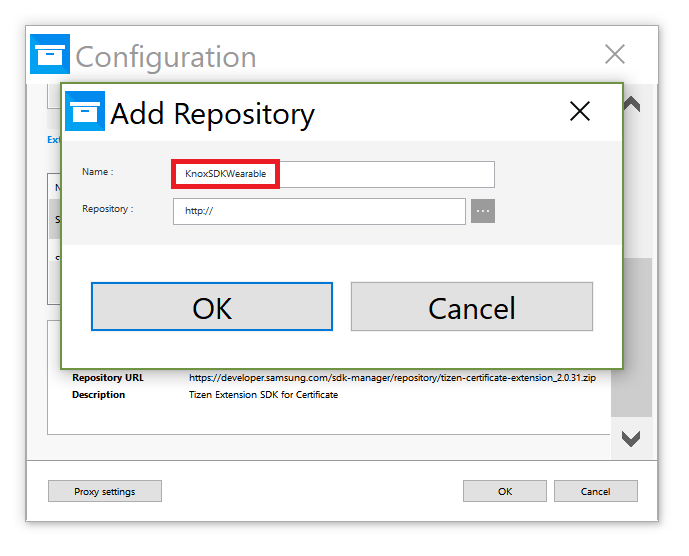
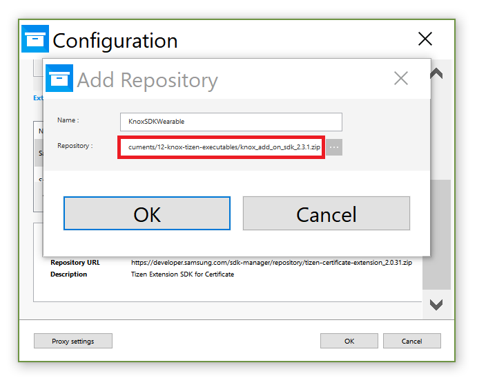
-
Click OK to close the Add Repository window. The new repository will appear at the end of the list of Extension SDKs.
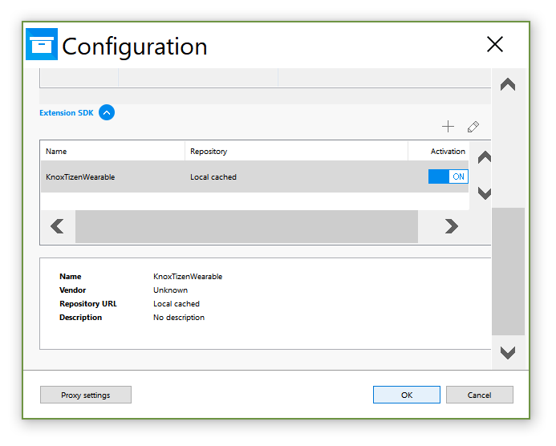
-
Click OK again to close the Configuration window. In the main window Extension SDK tab, you should be able to find the three new Extension SDKs: Knox Attestation SDK for Wearable, Knox Custom SDK for Wearable, and Knox MDM SDK for Wearable.
Click the Install button at the right of each of these items. Installation will take a few moments.
Be sure that both Samsung Certificate Extension and Samsung Wearable Extension SDKs are installed. If not, click the Install button for these as well.
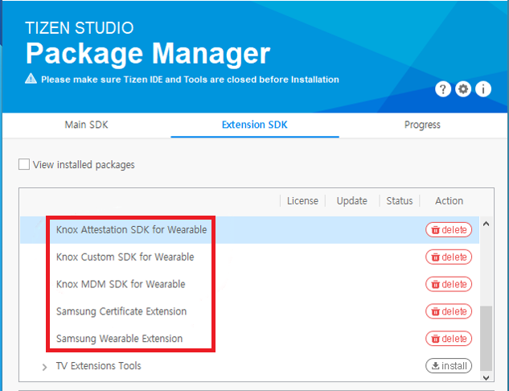
-
Once all packages are installed, Close the Package Manager. Then, in the confirmation window, click the checkbox to Launch the Tizen Studio and click OK.
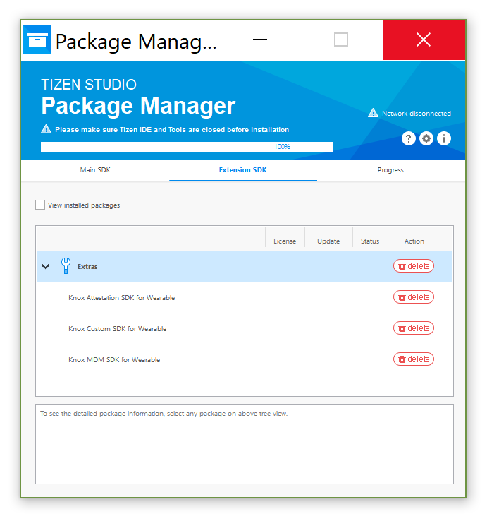
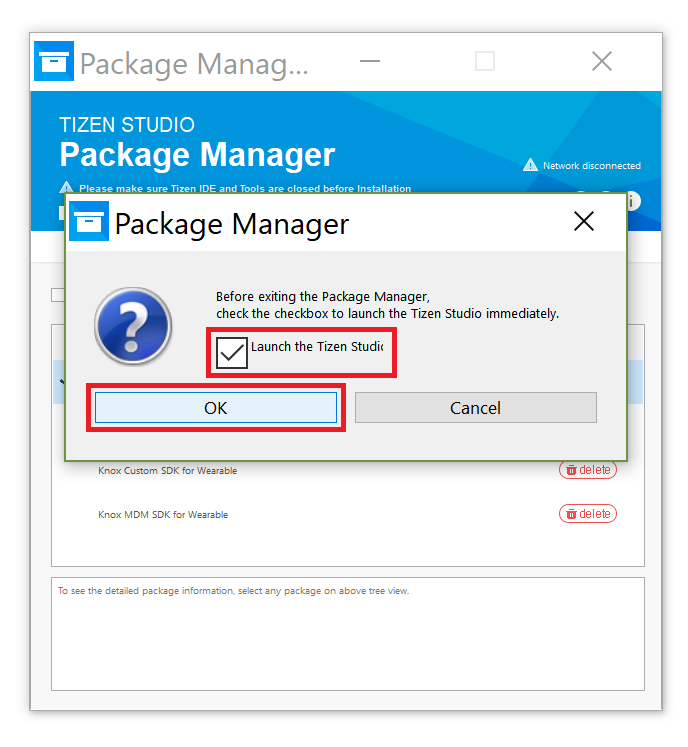
After configuring these settings in the Tizen Studio Package Manager, we also have to configure the project properties.
-
Open the project properties window by navigating Project > Properties.
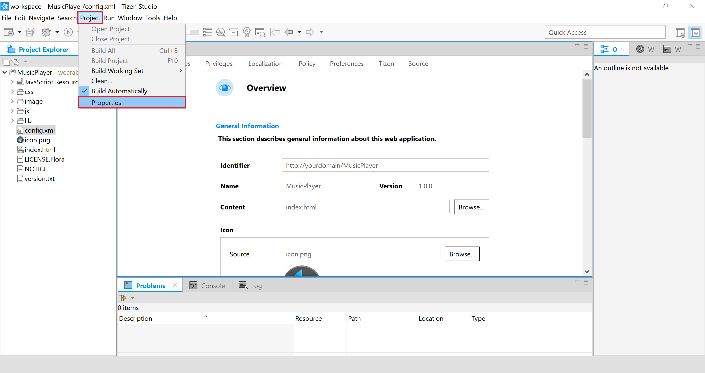
-
In C/C++ Build > Tizen Settings, make sure to check the following parameters:
-
In the Platform tab:
-
Architecture —
arm -
Name —
Tizen Device 4.0
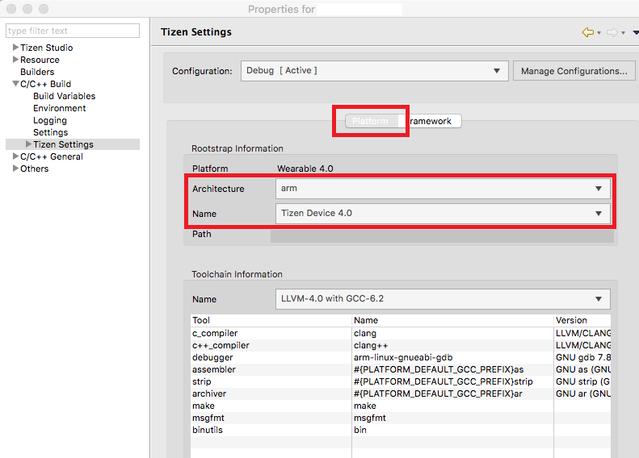
-
-
In the Framework tab, check all applicable frameworks, including:
-
custom-sdk-<version-number> -
mdm-sdk -
knoxattestation-sdk
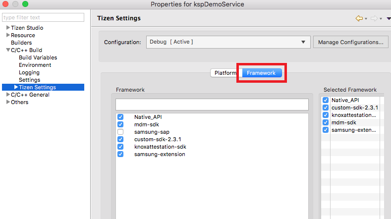
-
-
-
Click Apply & Close.
Create a certificate
-
After connecting the wearable with your PC, click the Tools > Certificate Manager menu.
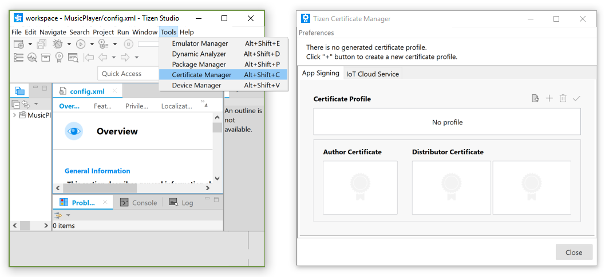
-
Select + menu, then choose the Samsung certificate profile.
- If this popup is not shown, make sure to have the Samsung Certificate extension installed.
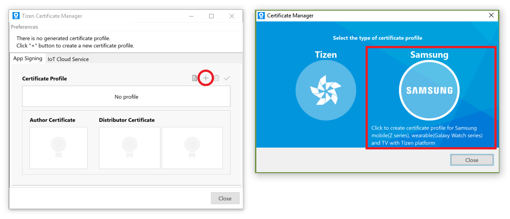
-
Select Mobile / Wearable as the device type, write a new title for your certificate profile, and click Next.
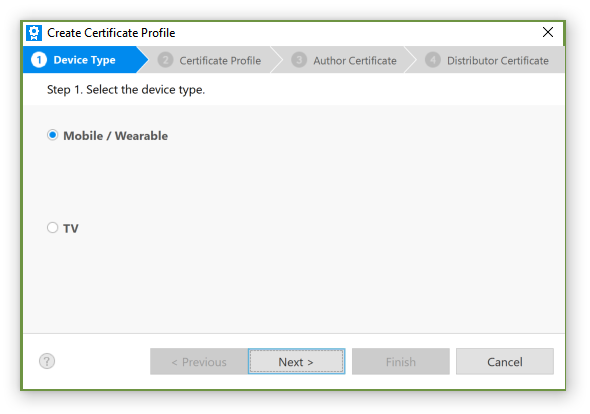
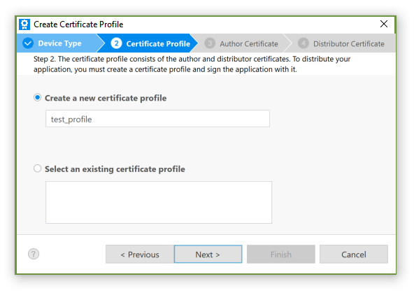
-
Click Create a new author certificate, enter your name, and fill in the password.
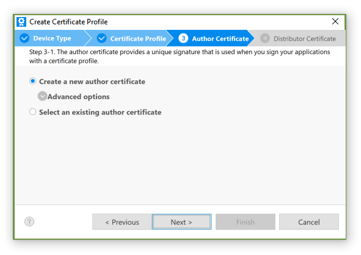
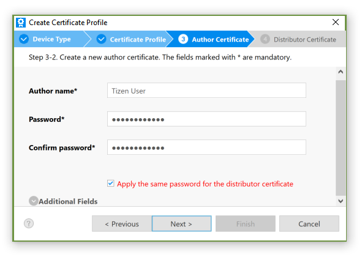
-
Sign in the Samsung account pop-up window and continue.
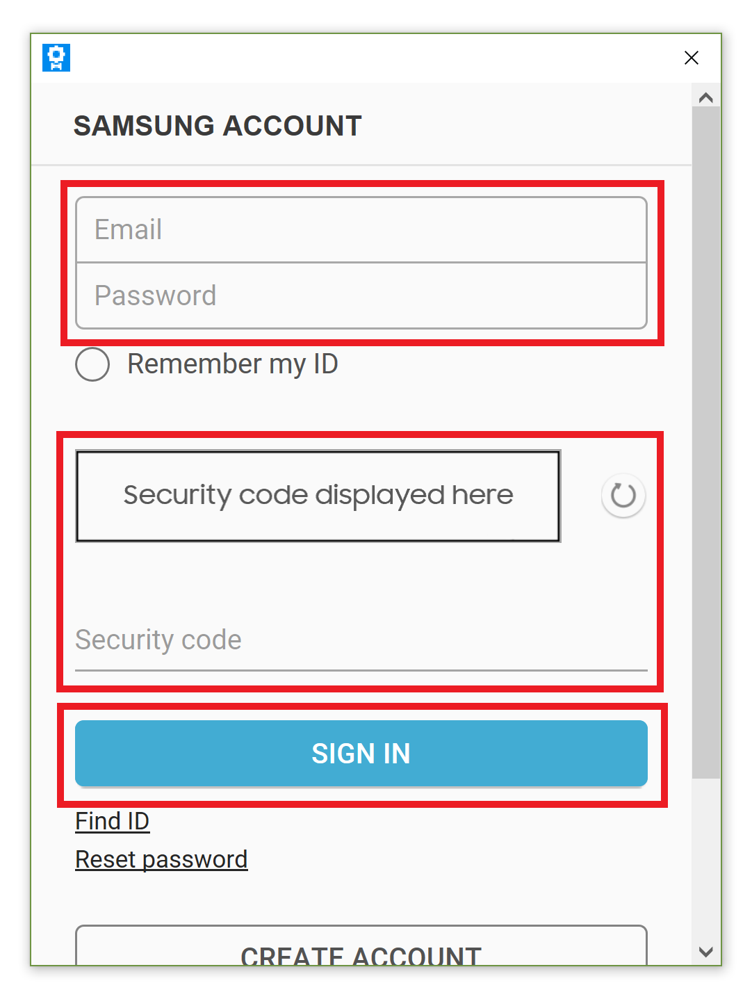
-
Upon seeing the Author Certificate completion page, click Next. Click Create a new distributor certificate, and you will be able to see the connected device’s DUID in the Add individual DUIDs panel. Click Finish.
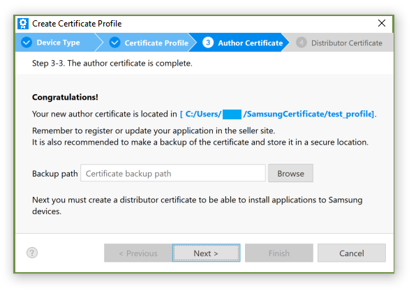
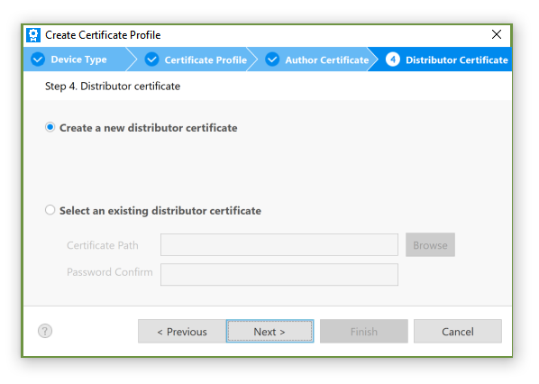
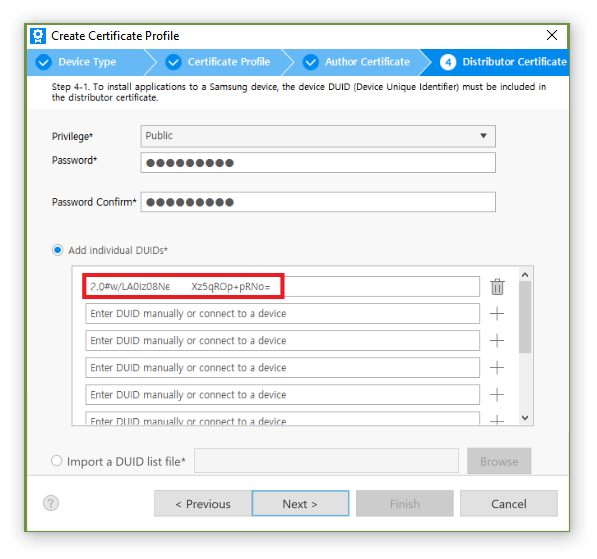
Run and debug
-
To install the app, right-click on project in Project Explorer > Build Project > Run As > Tizen Native Application.
-
To debug app, right-click on project in Project Explorer > Debug As > Tizen Native Application.
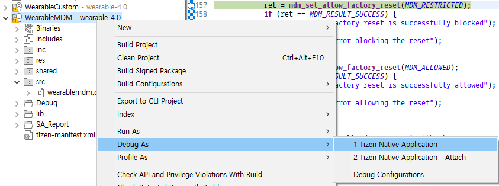
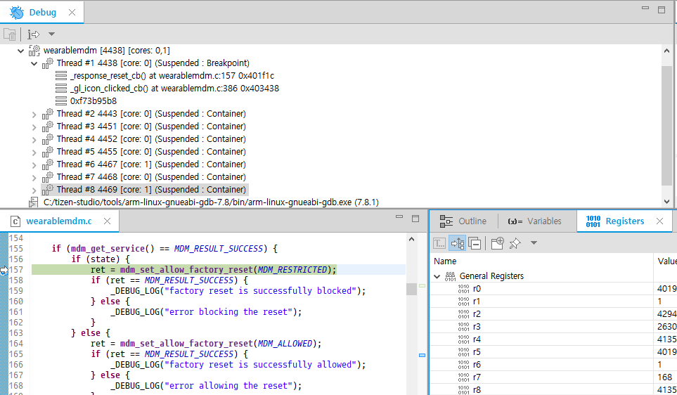
On this page
Is this page helpful?